2 years of experience in management consulting and information services industries. Currently graduated with a Master in Business Analytics from Gabelli School of Business, Fordham University. Passionate about data visualization, machine learning and big data. Experienced in Python, R, Tableau, SQL and Google Analytics
I love to create beautiful visualizations that tell meaningful stories and add values to businesses and society. As a hardcore fan of Rap and classical music, I am also fascinating about engineering new features to build appealing music recommendation systems with machine learning. Whether it's G-eazy or Mozart playing in the background, I'd like to channel the energy and creativity from music into my work and passion projects. In my free time, I enjoy taking visualization challenges and sharing the stories to the Public Tableau Community and other social websites. While I'm not coding or building dashboards, I cooked and invented new recipes with my roommates, played chess with my neighbors, practiced a new piano pieces, or read Malcom Gladwell's books at Madison Square Park.
Bots on Twitter are accounts that are controlled by computer programs, automatically producing content, and interacting with other accounts. These programs are turned on and off without following a pattern, making them hard to identify. Some bots only exist for providing some interesting tweets to users daily, but some bots are intentionally spreading disturbing or misleading information, which negatively impacts users’ experiences. Those malicious bots indirectly hurt Twitter’s image and business revenue. Although Twitter has already been able to identify most of the bot accounts, the company could have done better in Malicious Bots Classification. Therefore, this project propose a novel bot type classification method by using TFIDF. With the supervised machine learning method, this study aims to detect malicious Twitter bot types based on bot behaviors and text analysis.
BIG PICTURE
During the modeling process, the primary source of input data is bots' IDs from Bot Repository. I use Python to crawl users'information and tweets based on these IDs.
The process is divided into two phase. In phase one, I started off with features extraction with Twitter's metadata then tested multiple supervised machine learning models, such as Decision Tree, Random Forest, and Logistic Regression with IBM SPSS Modeler platform to create testing model with 13 significant indicators to predict behaviors of certain malicious bot types. In phase two, to further improve on the result, I created a dictionary for each type of malicious bots and calculated the TFIDF of keywords in the dictionary of each tweet. Then I again applied the most accurate model from phase one with additional TFIDF features. Finally I got a Random Forest that can predicted malicious bots correctly of 91.68% on the testing set.
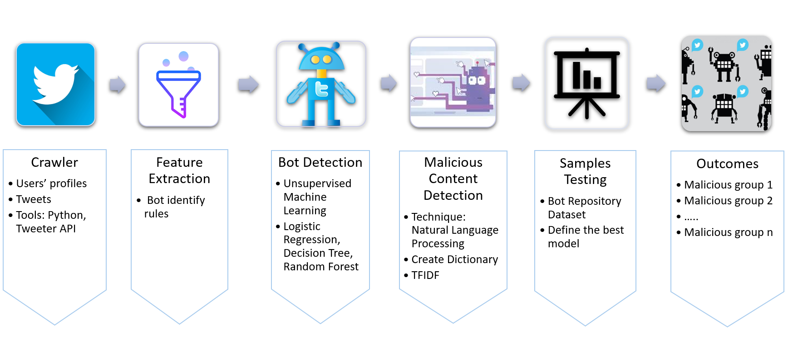
BASELINE MODEL
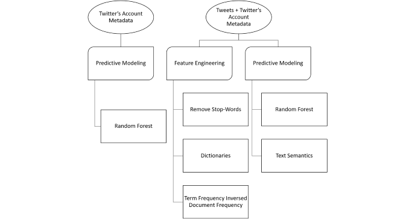
To start off with the baseline model, I first gained interest of using behavior patterns as prediction targets from multiple research papers. The selection includes three major malicious bots: Fake Follower, Scam Bot, and Spam Bot.
The raw data set includes 900 IDs for each kind of malicious bots from Bot Repository, reaching 2,700 IDs in total. From 2,700 IDs, I used Twitter API and Tweepy to crawl twitter's metadata and tweets. Since some accounts have been banned and might not have any tweet, I got 2,042 valid account and crawled 250 tweets for each account. In total, there are 138,042 tweets for Fake Followers, 160,245 tweets for Scam Bots, and 161,956 tweets for Spam Bots.
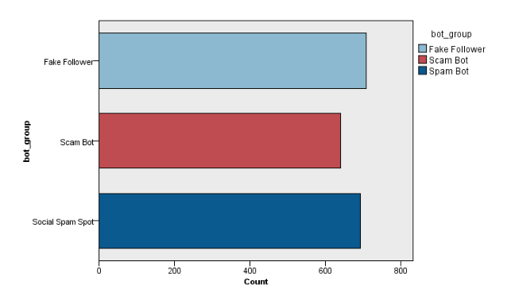
PHASE ONE - BAD BOT-LIKE BEHAVIOR DETECTION
In phase one, typical features of tweet syntax, temporal behavior and user profile are used to build a model that identifies different types of malicious bots. After testing multiple models, I decided to use Random Forest since it results in the highest accuracy rate. For your information, Random Forest is a classification algorithm consisting of many decision tree. I used IBM SPSS to build an uncorrelated forest of trees to predict the type of malicious bots based on 13 identified fields of account's behaviors. The features include user ID for each twitter account, average number of retweets of tweets for each account, average number of times tweets favorited by twitter users for each account, bot type, bot group, number of followers, number of friends, number of tweets for each account, a binary feature of default profile (yes/no), a binary feature of using default profile image, if geo-location is turned on, average number of tweets posted daily per account, and percentage of tweets containing URL or hyperlink for each account.
The target of the Random Forest model is bot group, which containing three nominal values of Fake Followers, Scam Bots, and Spam Bots. The data was partitioned into 70% of the training set and 30% of the testing set. The Random Forest test classified malicious bots with a high level of accuracy, 99.43% correctly on training data, and 91.05% on testing data. Since the training set may be overfitting, I focused on the testing set. Regarding the testing set, the model performed best at predicting Spam Bots, with accuracy of 96.226%, following by Fake Followers and Scam Bots, with accuracy of 89.862% and 87.019%, respectively. Overall, the Random Forests can be applied to classify malicious bot types with the features above at a high level of accuracy.
The Random Forests Classification applied nine predictor inputs to train 1405 records, which is 70% of the dataset. The result indicated that some features matter more than others. Pertaining malicious bot behaviors classification, the model identified the most important predictor as average of retweet count, following by number of followers, average daily tweet, number of tweets, number of friends, percentage of tweets containing URL or hyperlink per account. Using the default profile, the average number of favorites and turning on geo-location do not demonstrate significant results for classification.
PHASE TWO - BEHAVIORAL FEATURES AND TEXT SEMANTICS DETECTION
In phase two, I used Python package NLTK to get keywords dictionary and frequency of each keyword for 216,173 tweets. I calculated every term's frequency for each group of malicious bots. I set he threshold for term frequency rate is 0.05%. I picked every term with that is larger than the threshold to create detection dictionaries for fake followers, scam bots, and spam bots. To calculate fitting degree of each tweet with three dictionaries, I used Python and Excel to calculate they keywords' TFIDF in each tweet and see whether these dictionaries contribute to our prediction. Finally, I normalized TFIDF of each tweet to make sure they are under the same weight then calculated the average normalized TFIDF of each account. Wordcloud are used to check the term frequency, and the results of Word Cloud were consistent with the TFIDF calculation.
In short, Fake Followers have the lowest TFIDF score in all three dictionaries and a little better match in Fake Follower dictionary, probably due to their small number of tweets. Scam Bots are in the middle, and Spam Bots have high TFIDF in all three dictionaries and especially in the spam dictionary. Spam Bots do post tons of tweets, and the result indicates that there are some words in the spam dictionary that have discriminative power to distinct Spam Bots from other bots. We added these three average TFIDF as our new features in our detection model and built a new model to see whether these three new features can contribute to our overall accuracy.
Spam bot's Tweets WordCloud
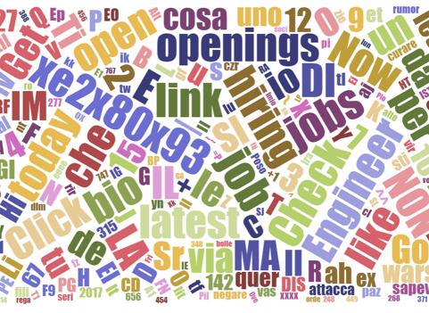
Scam bot's Tweets WordCloud
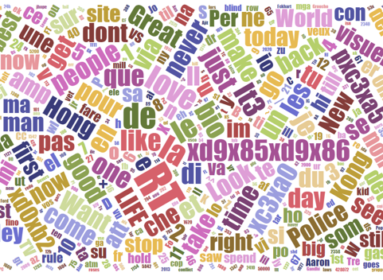
The Random Forest Classification applied 12 inputs as predicting factors to train 1405 records again. The dataset was partitioned into 70% of the training set and 30% of the testing set. Adding three new inputs of average TFIDF scores of Fake Followers, Scam Bots, and Spam Bots, the model produced a new list of important indicators. The top three indicators now are average of retweet count for each tweet, the number of followers, and average TFIDF score of the spam bot. According to the result, the TFIDF score plays a significant role in classifying types of malicious bots. This new model predicted malicious bots correctly of 91.68% on the testing set.
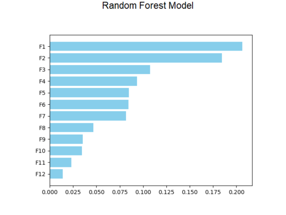
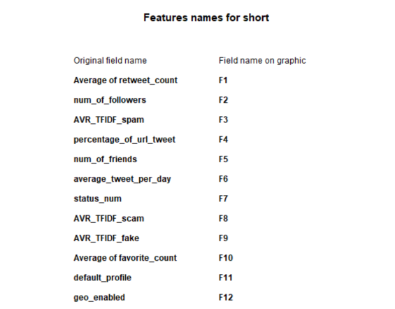
EVALUATION
In general, the model of phase two performed slightly better than the model of phase one based on the comparison of accuracy. I can’t tell whether it’s due to the new features or the random error. However, one thing I am sure about is that the TFIDF certainly contributes to analyze the bot types as the model could predict correctly of 81.16% on the testing data when I only used these three features to detect different kinds of malicious bots.
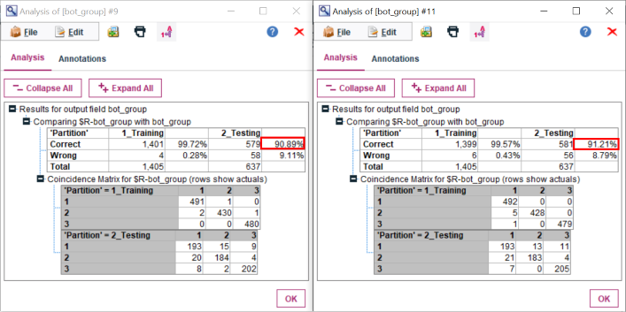
CONCLUSION
In this project, I combined supervised machine learning and natural languague processing to classify different types of malicious bots on Twitter. After intensive research of related works, I found out that even though most of them researched about bot identification, and even though some of them also studied malicious bots identification, none of them use keyword detection.
This project targets on malicious accounts' tweets as a means to build keyword dictionaries. Both detection tools are more and more advanced, but bots are also becoming more human-like, which makes them more complicated to detect. I focus on finding features related to natural language.
In phase two, I trained a Random Forest classifier using the features of average TFIDF score of keywords in each type dictionary. I was able to create a multi-class classifier that performs with 91.68% of accuracy when classifying into one of 3 classes.
Overall, Fake Followers are inactive accounts with the highest score of TFIDF_fake, Scam Bots are also inactive accounts but with high retweet counts and the highest score of TFIDF_scam, and Spam Bots are active accounts with the highest score of TFIDF_spam. Besides, I can predict Spam Bots the best using the TFIDF score since TFIDF_spam is in the top three important indicators of the model.

BIG PICTURE
This project aimed to build an useful and comprehensive music recommendation system based on the Million Song Dataset and musiXmatch dataset. In details, the two datasets include data of user listening history, song metadata, artist metadata, artist similarity, and lyrics. To build the recommendation systems, three algorithms were employed, including popularity-based, collaborative filtering, and content-based in order to generate three different recommendation lists - Hot Song List, Personal List, and New User List. Those algorithms were compared and combined to establish recommending strategy for different scenarios and users. ALS algorithm was used for a personal recommendation, and lyric-based and artist-based similarity recommendation was employed to solve the cold-start problem. The whole system was built with Python and PySpark on Google Cloud Platform and AWS.
In this project, we want to focus on the streaming music industry. The potential benefits of a state of art recommendation system are valuable for streaming music industry. Some possible benefits include the improvement of user retention and engagement as well as a comprehensive understanding of customers' taste and the changing trend of their tastes.
DATASET DESCRIPTION
The Million Song Dataset was originally started as a collaborative project between The Echo Nest and LabROSA. The dataset contains metadata, or derived features, for one million songs. The size of the entire data scales is up to 280GB. The Million Song Dataset is also a cluster of seven complementary datasets provided by the community. In this project, besides the subset, Taste Profile and musiXmatch are used to build the music recommendation system.
Regarding the Million Song subset, besides 1,000,000 unique tracks ID data, the song metadata, the links between artist ID and the tags, and artists’ similarity were extracted using the SQLite databases. For artists, the artists’ location data was also used.
The Taste Profile subset contains user listening history. The dataset scales up to 488MB, including 1,019,318 unique users, 384,546 unique MSD songs, and 48,373,586 user-song-play count triplets.
The musiXmatch dataset provides official lyrics collection of the Million Song Dataset in the bag-of-words format as well as the full mapping of MSD IDs to musiXmatch IDs. The mapping comes as a text file, including 779 thousand matches. The lyrics are directly associated with Million Song Dataset tracks regarding similar artists, tags, years, and audio features. We extracted the lyrics with the SQLite database. Each track is described as the word-counts for a dictionary of the top 5,000 words across the set. The split of training and testing was done according to the split for tagging, regarding tagging test artists. There are 210,519 training bag-of-words, 27,143 testing ones. The dataset contains track ID, mxm ID, word of lyrics, and frequency of the words features.
After mapping all the musiXmatch IDs, track ID, and song ID from listening history, the final dataset scaled up to 3GB.
BASELINE MODEL
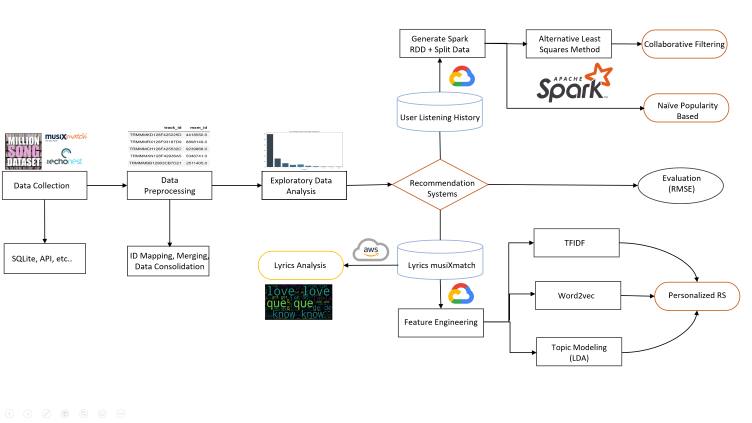
Data preprocessing is divided into 2 steps: data consolidation between taste profile, one million unique track IDs and MusiXmatch IDs, and table joins. Then information regarding seeds, listening history, track metadata, artists information, artist’s similarity, and lyrics were saved into separate files for further analysis.The data consolidation was divided into two steps: first step is to map song IDs to track IDs, and second step is to map track IDs to musiXmatch ID. The final dataset covered 90% of the songs in the original listening history. Those IDs are saved as seeds, and taste profiles containing user ID, track ID, and frequency as listening seperately.
Next, metadata of tracks were extracted from SQLite database ("track_metadata.db").
For lyrics data, data were extracted from "lyrics.db" SQLite database.
For artists similarity data, target artist IDs and similar artist IDs were fetched from "artist_similarity.db" SQLite database.
ALGORITHM DEVELOPMENT
1. Popularity Benchmark
As a benchmark for recommending songs, recommending popular songs is better than random guesses. Data were filtered with total frequency based on listening history then top 10 heated tracks were selected. This would be the baseline saver in case there is no data for a new user (cold-start problem).
2. Collaborative Filtering
Collaborative filtering is probably one of the most used approaches for the recommendation system, or at least as a necessary component of some advanced recommendation structures. However, it has a surprisingly simple requirement for data. It needs nothing else but users’ historical preference on a set of items. The main assumption here is that the users (listeners in our case) who have agreed in the past are very likely to agree in the future. For multiple users, it assumes if user A liked the same product as user B, A would also like to have similar taste as B for other B’s favorites.
In terms of the ratings, it often requires some metrics to indicate user’s preference, which can either be explicitly available data such as 5 stars or thumbs-up on the product, or an implicitly derived score such as clicks, number of purchases or other data recorded in the cookie. In this case, traditional way was implemented by utilizing the listening frequency as the rating. The assumption when lacking explicit rating is that a higher listening frequency equates to a higher rating.
For ALS, a matrix with frequency of each song played by each user was constructed. Certainly, this matrix is sparse with tons of missing value, as a limited number of users have listened to only a limited set of songs. The high-level idea is to approximate the matrix by factorizing it as the product of two matrices: the user matrix that represents each user, while the item matrix describes properties of each track.

For a reasonable result, two matrices were created so that the error for the known user-song pairs is minimized. The error here refers to the rooted mean squared error (RMSE). In a more detailed technical level, ALS would first fill the user matrix with a random value, and then optimize the song matrix value by minimizing the error. After that, it “alters”, which means it would hold the song matrix and optimize the value of the user’s matrix. This step minimizes two loss functions alternatively and should achieve some optima.
During the implementation, Spark ML pipeline was used with the following settings. A big set of the parameters were picked and grid-search with cross-validation on this space was executed. Some important parameters to tune include: maxIter (the max number of iterations), rank (the number of latent factors, which basically determined the shape of matrix), and regParam (the regularization parameter).
3. Content-Based Filtering
Content-based filtering recommended similar songs based on the cosine similarity of different features of lyrics to a user's profile. Each songs' lyrics were characterized by its (1) TFIDF, (2) Word2vec, (3), Topic Model with LDA. The Features were represented in matrices, and the cosine similarity was calculated between matrices.
In this case, the content-based filtering was designed for new users who came to search for a specific song, there was no existing user's profile. The input song's name and artist's name were taken as the user's profile and then the specific song's index was matched in the cosine similarity matrix to return the 10 similar songs.
Furthermore, artists similarity was taken into account. The similarity scores of one specific artist's similar artists' songs for the specific song an user searched for were matched in the cosine similarity matrix, and the top 10 similar songs belong to the similar artists were returned. Finally, along with the specific song the user searched for, the algorithm recommended 20 other songs that were closet in cosine distance to the user's input song.
Three different cosine similarities were used to recommend 20 songs, respectively, and the overlapping songs among three results were taken as the final recommendations.
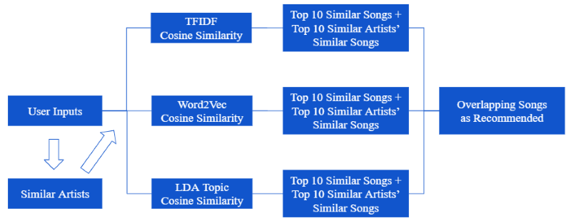
TFIDF for Lyrics
After stopwords removal and Porter stemming for lyrics, the TF-IDF Vectorizer in the python scikit-learn package was used to calculate the TFIDF of each song's lyrics. However, the was a limitation in the dataset as the lyrics came in the form as bag-of-words rather than the original lyrics. The actual lyrics were protected by copyright, and Million Song Dataset did not have permission to redistribute them, therefore, only unigram could be used.
After getting the TFIDF matrix, the cosine_similarity in the python scikit-learn package was used to calculate the cosine similarity scores among different tracks based on the TFIDF.
Word2vec for Lyrics
Word2vec is a two-layer neural net that processes text by “vectorizing” words. Its input is a text corpus, and its output is a set of vectors: feature vectors that represent words in that corpus. While Word2vec is not a deep neural network, it turns text into a numerical form that deep neural networks can understand. The purpose and usefulness of Word2vec are to group the vectors of similar words in vector space. That is, it detects similarities mathematically. Word2vec creates vectors that are distributed numerical representations of word features, features such as the context of individual words. It does so without human intervention.[2]
The data size was so large that calculating the cosine similarity based on the high dimensional sparse TFIDF matrix was time-consuming and required a lot of memory. Thus, the Word2vec was used in our second method. However, the same limitation of lyrics made Word2vec less accurate since there was no context as only unigram could be used.
The Word2Vec model in the python gensim package was used to create vectors for each song’s lyrics. The words appearing only once were ignored, the total dimension of the word vectors was set 200, and the window size was set as 1 because there were only unigrams in the lyrics.
After getting the Word2vec matrix, the cosine_similarity in the python scikit-learn package was used again to calculate the cosine similarity scores among different tracks based on the vectors.
LDA for Lyrics
Topic modeling is a type of statistical modeling for discovering the abstract “topics” that occur in a collection of documents. Latent Dirichlet Allocation (LDA) is an example of the topic model and is used to classify text in a document to a particular topic. It builds a topic per document model and words per topic model, modeled as Dirichlet distributions.[5] Thus, the big idea behind LDA is that each document can be described by a distribution of topics, and each topic can be described by a distribution of words.
The assumption that there must be similar topics among all songs was used in this case.Limiting the number of topics could also help to save time and memory when dealing with a large dataset. Therefore, the LDA was used in the third method. LDA ignores syntactic information and treats documents as bags of words, so the unigram format in the dataset doesn’t matter too much in this method.
The LDA Model in the python gensim package was used to create a topic matrix for all songs’ lyrics. Only the top 10 topics were selected in the model.
After getting the topic model matrix, the cosine_similarity in the python scikit-learn package was used again to calculate the cosine similarity scores among different tracks based on the topics’ weights.
Artist Similarity
Million Song Dataset offered a dataset containing similarity among artists, which expanded the content of our content-based filtering. This data was used after the cosine similarity was calculated. The similar artists’ songs were into account, even though they were not in the top 10 similar songs list as the assumption was that similar artists would attract the same audiences in some way.
After features creation, two key functions were defined to accomplish the recommendation system. The first function was defined to return the top 10 recommended songs simply based on the cosine similarity. The second function was defined to find the other top 10 recommended songs based on the artist similarity combined with cosine similarity. Finally, these two functions would create a DataFrame that contained the user input song along with the other 20 recommended songs. Three DataFrames would be created based on three cosine similarities, and they were merged to return the overlapping songs, which could be the most similar songs to the user input song.
RESULT AND EVALUATION
1. Collaborative Filtering
Here is the benchmark of our top 10 most listened songs.
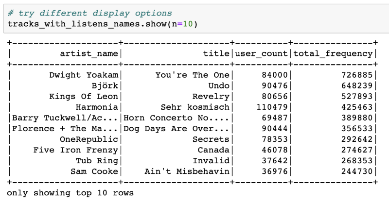
The data was split into three parts: 60% as train, 20% as validation, and 20% as test. Grid search and cross-validation on validation set was implemented to determine the best parameters of the recommendation system and only recommend the results to the new users in the test set once to avoid information leakage. The process was implemented from scratch and was locked in a pipeline. This work was constructed to avoid overfitting problems.
As for Spark 2.0, when asked to provide a rating for new users never seen before, the ALS could only yield NAN value. . Therefore, it was impossible to adapt Spark ML’s Cross Validator to check the RMSE. So the algorithm was set to drop NAN values by default with customized cross validation process before using RMSE for evaluation.
The following configuration steps were executed: (1) set appropriate parameters for users, items and rating; (2) fit ALS and transform the table to generate the prediction column; (3) run predictions against the validation set and check the error; (4) finalize the model with the best RMSE score.
Exploratory analysis showed that more than half of the songs in the sample were listened at least once. Thus, it could be inferred that songs played more than once can better represent users' tastes and run the ALS on two versions of the datasets.
Result comparison of model with all data and frequency >=2 data was shown as followed:
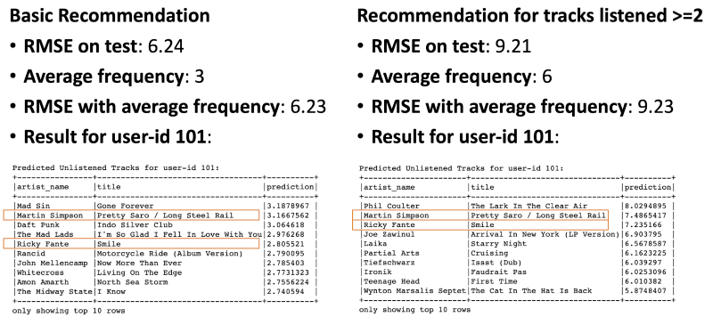
Except for cross-validation, another common measurement is to compare the model with fake test data where every rating is the average number of frequencies from the train data. While the model excluding the 1-time listened songs returns a slightly higher RMSE score on the test dataset, it behaves better when compared with the average frequency. And this may hint the recommendation makes more sense. The highlighted tracks can be of the highest recommendation quality, as they are the overlap between two ALS recommendation models.
2. Content-Based Filtering
Let's simulate a new user searches for a song to see the recommendation results.
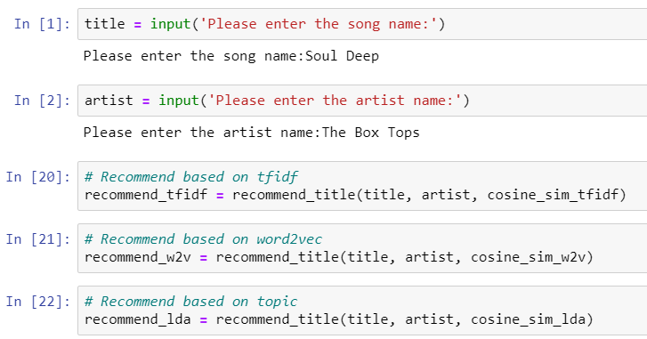
Three DataFrames were created after the function was run. The results showed: 4 same songs between TFIDF and Word2vec methods; 2 same songs between TFIDF and LDA methods; 2 same songs between Word2vec and LDA methods; 1 same song among three methods. Therefore, the final recommended song related to the Box Tops’ Soul Deep was Four Tops’ You Keep Running Away.
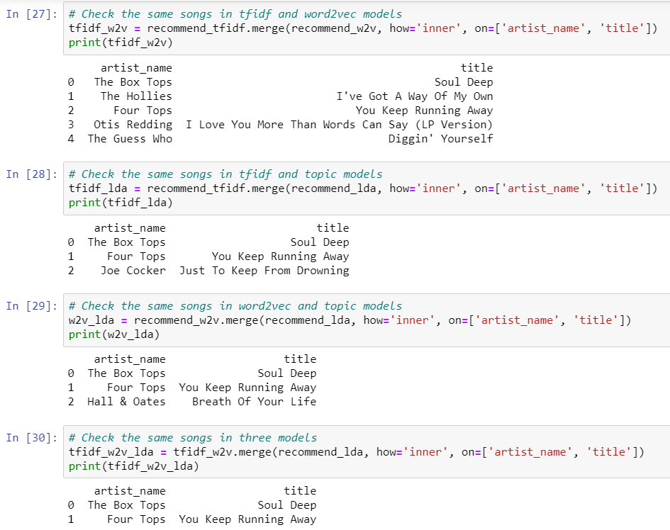
LYRICS ANALYSIS
Besides recommendation system building, further exploration of lyrics was conducted by implementing the LDA model and visualizing the most popular 30 words in lyrics based on the time, including songs from the 2000s, 90s, 80s, 70s, 60s, and 50s.
1. Topic Modeling Visualization
Regarding the LDA model in lyrics analysis, it is noted that the topic modeling visualization was slightly different from the result in the previous content-based recommendation system as the lyrics were not processed with stemming and the model defined 20 topics instead of 10 topics. The original word form of lyrics were kept for a more comprehensive lyrics topic demonstration. Therefore, the implementation included removing stopwords, generating token dictionary class, and building a corpus. The corpus and dictionary were filetered into the LDA model with 20 topics.
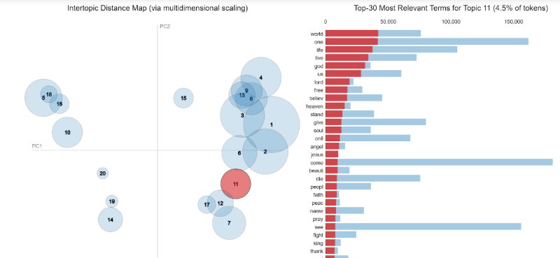
Some interesting results were found from LDA clustering of 20 topics. The interactive illustration of clusters can be reviewed in the Jupyter notebook (posted on my github). The graph has shown that the cluster 5,10,18, and 16 as well as cluster 20,19 and 14 were separated from other clusters in different dimensions. The reason for this separation was the difference of language as those clusters were not English. On the other hand, cluster 11, 17, 12, and 7 contains lyrics with darker meaning or religious meaning. For instance, we could refer cluster 11 to religion as the most relevant words are “world”, “life”, “live”, “god”, “us”, “heaven”, “god”, “jesus”, “soul”, “angle”, and so on. However, topic in cluster 12 could be related to some darker meaning, or rap song, since the lyrics contained very negative words, such as the “f” word, “kill”, “dead”, “hate”, “hell”, “gun”, “shit”, “bitch”, “war”, “sick”, “shot”, or “murder”. Those clusters were placed on the fourth dimension (lower right side) of the graph. The first dimension (upper right side) included topics with more positive vibes, such as love or party. For instance, cluster 15 could be referred to as a “dance party” as the lyrics included mostly “oh”, “ooh”, “ah”, “yeah”, “shake”, “mama”, “yes”, “babi”, “ohh” and so on. There are multiple clusters relating to “love” mixed together since this topic tends to contain multiple emotions. For example, we can refer to cluster 8 as “happy love” as the lyric contains “love”, “want”, “need”, “feel”, “like”, “kiss”, “true”, “touch”, “give” and so on. Cluster 1 and cluster 2 can refer to a “sad love” or “break up” as the lyrics contains “away”, “see”, “day”, “feel”, “dream”, “fall”, “eye”, “heart” , “time”, “never”, “know”, “think”, and so on, which can demonstrate the longing or sad feeling.
In general,a good class of 20 topics could be defined with the LDA model. Each topic was approximately well-defined with different themes, such as religion, dance party, dark drama, happy love, and sad love.
2. Lyrics Analysis Through The Time
The second analysis of lyrics was conducted relating to the timeline of the songs. The changes of lyrics from songs from the 50s to 2000s were examined. Lyrics data were merged with track metadata. The lyrics were preprocessed with stemming, stopwords removal, and tokenization. Bar charts of the top 30 words with the highest frequency for each period were plotted.
Some interesting results based on the observation of the top 30 words in lyrics over the time was found. “Love” seems to be the greatest inspiration in songs of the 50s, 60s, 70s, 80s and 90s as the top words repeated over the past more than 50 years. From 2000 to 2011, the word “love” took the second place while the word “know” became the most popular word. In general, the word “love”, “know”, “like”, “got” were always popular from the 50s to the 2000s.
Lyrics in 2000s:
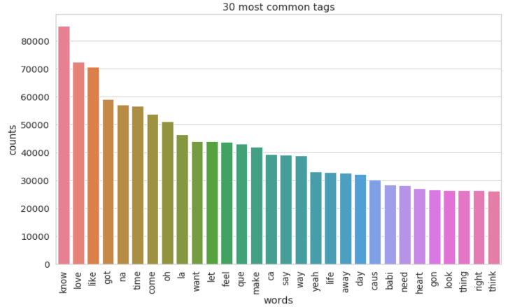
Lyrics in 1990s:
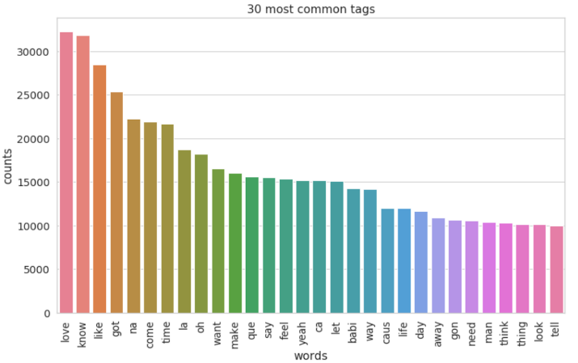
Lyrics in 1980s:
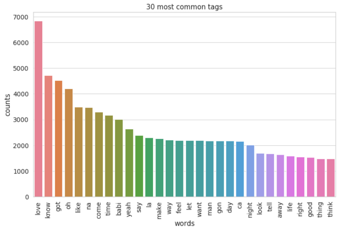
Lyrics in 1970s:
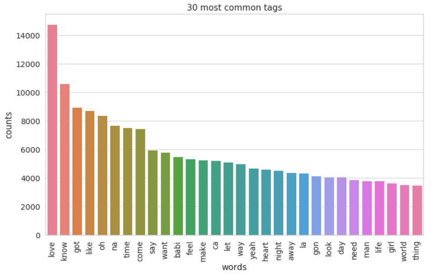
Lyrics in 1960s:
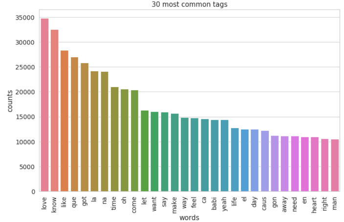
Lyrics in 1950s:
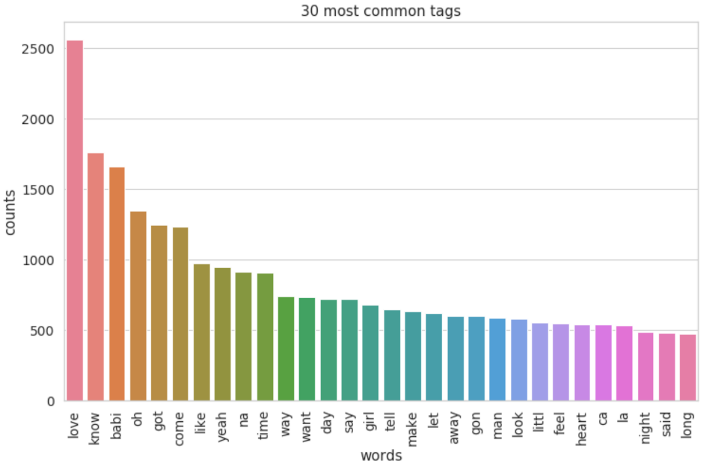
Comparing the most popular words in lyrics of the 60s and 2000s, the lyrics in the 60s tended to bring a more subtle vibe than the 2000s did. The 60s lyrics had “babi”, “know”, “love”, “yeah”, “oh”, and “got”, which demonstrated the priority in love and the lover. At the same time, the 2000s lyrics had “love”, “la”, “know”, “got”, “de”, and “come”, which portrayed a bustling vibe and prioritized love and party at the same time.
Word Cloud for Lyrics in 1960s:
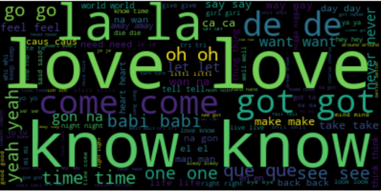
Word Cloud for Lyrics in 2000s:
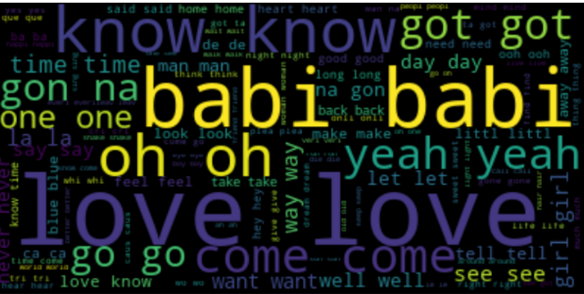
CONCLUSION
In this project, recommendation system was built using a dataset with 1,019,318 unique users and 384,546 unique songs.ALS algorithm, which combines user and item knowledge, was used for collaborative filtering recommender. This recommender can be applied to old users with sufficient listening history to generate personalized recommendations. Several aspects of song knowledge were combined, including artist similarity, TF-IDF, Word2vec and LDA modeling for lyrics, to build a content-based recommender. The content-based recommender is for new users with only one or a few searches and listening history. Similar songs for the current song will be recommended. Considering that Spotify has about 2 million monthly active users, our project is close to the monthly magnitude of the industry-level. Yet a lot of obstacles during the implementation process still emerged.
There are several lessons can be learned when working with Cloud and Pyspark. First, spark has a high dependency on memory usage. During the testing phase, our virtual instance with 30GB memory crushes from time to time. It would save some cost to choose a high memory specialized instance on google cloud. To run cross validation on the 3GB listening history data, it would be secure to choose the following configuration. It is very helpful to use the Unix command “free -m” to check available memory in time. In addition, we learned that we need to cache the datasets whenever they are likely to be used more than once:
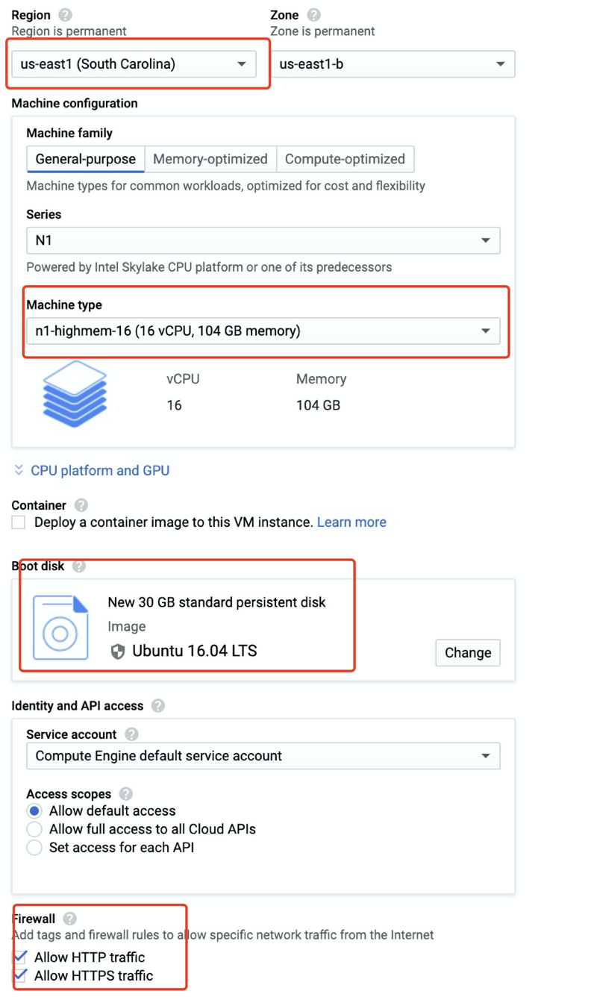
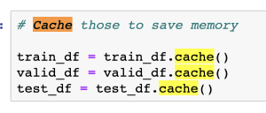
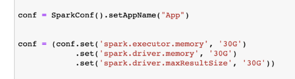
However, overcoming memory issues on cloud alone is not sufficient. Some default spark settings needed changing to permit more executing memory and driver memory resources to be adapted by Spark.
In addition, debugging with spark is quite suffering, as the error message is not informative at all. A common mistake is that the data type is not fixed or switched during the processing. Due to the Java development environment, different methods are very strict on input data type. Casting the data types should be a regular task while working with Spark. For example, ALS function in spark only allows integer input. It would return error even when the data type is big integer and so on. In the same vein, the raw ideas from the original data frame are no longer useful that new integer id pairs have to be generated.
An example of change the Data Type to Int:

An example of change ID's Data Type from Bigint to Int:

Curently, there are still obstacles towards a final hybrid recommendation system. At this stage, the main difficulty comes from the lack of valid lyrics data. As for further steps in the future, combining the collaborative filtering and content-based recommendation system can provide hybrid recommendations. According complementary advantages from various recommendation algorithm, hybrid solution such as using overlappings would provide users with suggestions of higher quality.For example, a hybrid system based on lyrics and listening history could make sure the users not only like the explicit topic of the track but also like the genre from a taste perspective.
As a matter of fact, more dimensions of recommendation are always better. Google naturally combined plenty of recommendation strategies in its wide and deep recommendation system with neural networks and ensemble methods. Though it is difficult to bring this project to such a top level, but this precious practive undoubtedly helped lay a solid foundation for potential industrial workds involving recommendation systems or distributed systems.
Besides, there are some new ideas for further exploration:
1. User2Vec:
Word2Vec for NLP was used in this project to analyze the knowledge about songs. What if songs are considered as words and users are considered as documents ? The listening history of a user is the text content of the document. Then Word2Vec and Doc2vec can be apply to find similar songs and users.
2. Graph algorithm:
Graph database is another new trend for online shopping recommendation systems. When modeling songs, artists, and users in a graph database, graph algorithms can help to find the relationship among those features and consider knowledge about songs, artists, and users at the same time.
3. Content-based filtering using music audio:
In this project and most current business implementation, content-based filtering in the music industry means lyric-based or text-based. However, machine learning and and deep learning are also having great processes in audio processing. Analyzing the music audio directly could be a new direction for content-based filtering.
REFERENCE
1. A Beginner's Guide to Word2Vec and Neural Word Embeddings. (n.d.). Retrieved from https://pathmind.com/wiki/word2vec
2. Content-based Filtering. (2012, January 24). Retrieved from http://recommender-systems.org/content-based-filtering/
3. Karantyagi. (n.d.). karantyagi/Restaurant-Recommendations-with-Yelp. Retrieved from https://github.com/karantyagi/Restaurant-Recommendations-with-Yelp
4. Li, S. (2018, June 1). Topic Modeling and Latent Dirichlet Allocation (LDA) in Python. Retrieved from https://towardsdatascience.com/topic-modeling-and-latent-dirichlet-allocation-in-python-9bf156893c24
5. 5. MODELING. (n.d.). Retrieved from https://xindizhao19931.wixsite.com/spotify2/modeling
6. Welcome! (n.d.). Retrieved from http://millionsongdataset.com/
Available on Github.